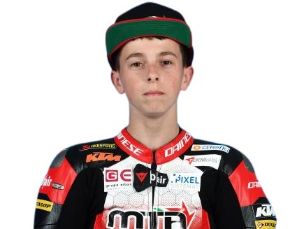

Recent News

Fadillah Arbi Ready to Learn Lessons at FIM JuniorGP
3 Days Ago .

Fadillah Arbi Aditama Bad Weekend in Barcelona
4 Days Ago .


Popular News


JGP Rider Standings
| No | Name | Points |
|---|---|---|
| 1. | José Antonio Rueda | 108 Points |
| 2. | David Salvador | 69 Points |
| 3. | Syariffudin Azman | 62 Points |
| 4. | David Alonso | 61 Points |
| 5. | Filippo Farioli | 60 Points |
| 6. |  Ángel Piqueras Ángel Piqueras |
57 Points |
| 7. | Tatchakorn Buasri | 41 Points |
| 8. | Adrián Cruces | 37 Points |
| 9. |  Xabi Zurutuza | 25 Points |
| 10. | David Almansa | 24 Points |